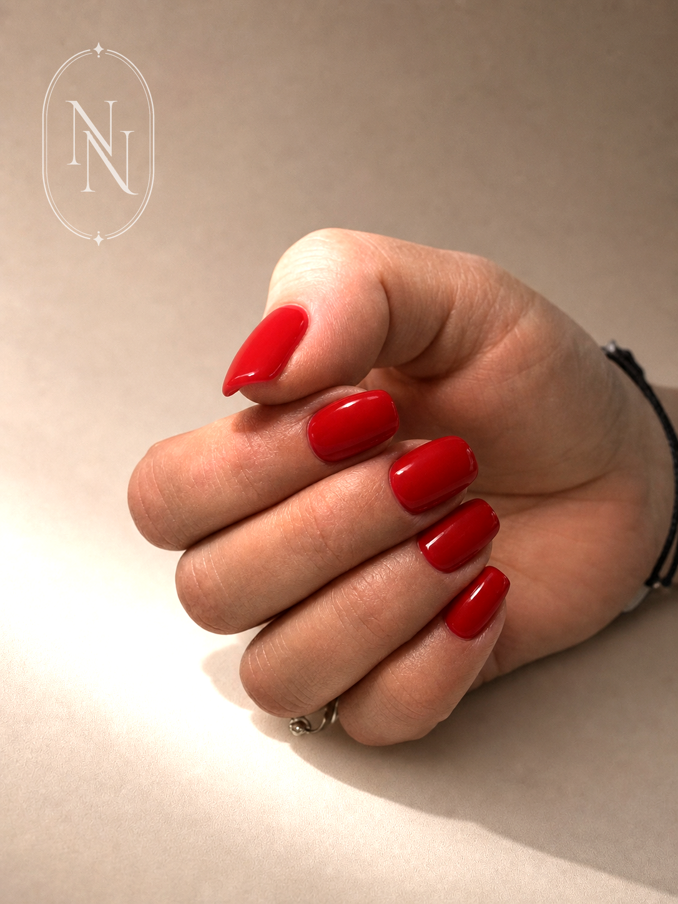
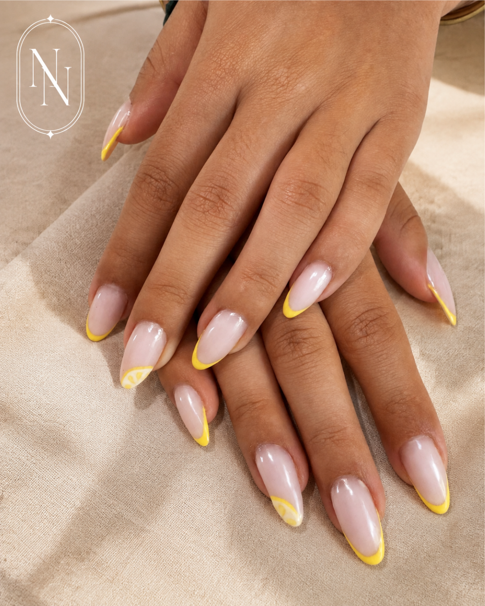
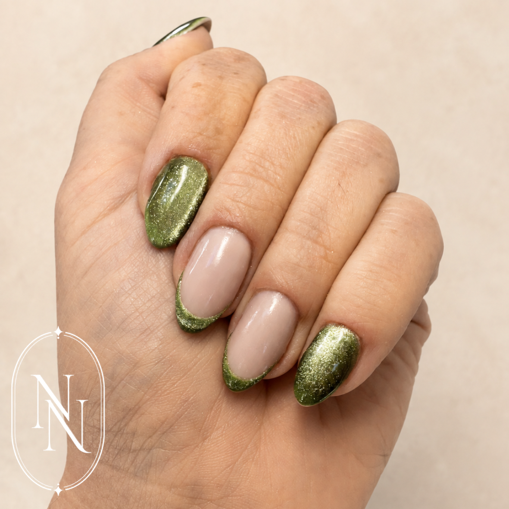
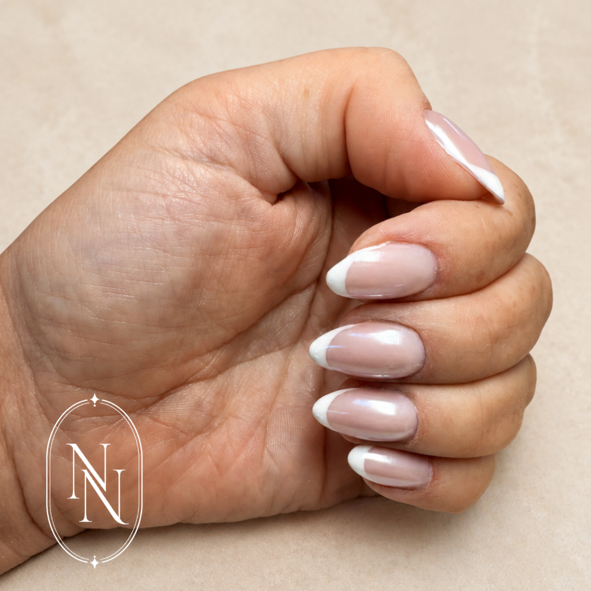
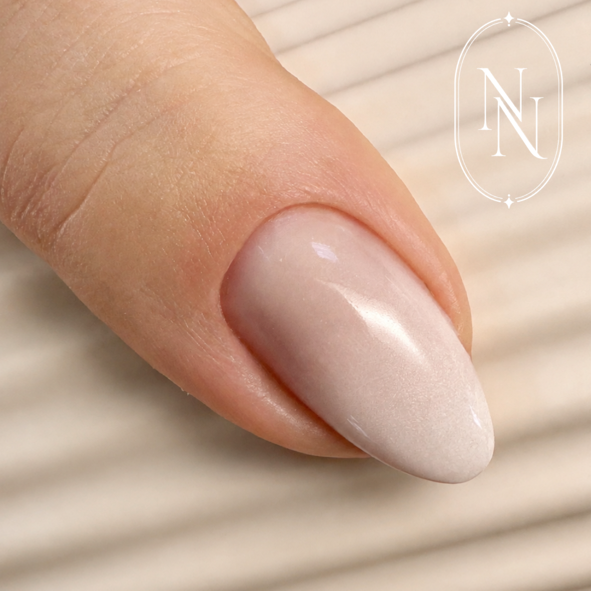

Coupe & coiffage
Brushing, coupe et finition wavy pour révéler le mouvement de vos cheveux.
 NALLYS
NALLYSAprès plus de vingt ans dans la coiffure, je vous accompagne pour trouver la coupe, les nuances et le coiffage qui vous ressemblent. Chaque projet commence par un échange sur vos envies et votre quotidien.
Brushing, coupe et finition wavy pour révéler le mouvement de vos cheveux.
Coloration, gloss / patine, mèches, balayage et ombré hair : un résultat défini ensemble selon vos cheveux et leur historique.
Olaplex et Color Wow, en supplément de votre forfait. Un soin choisi selon les besoins de vos cheveux ; le soin standard reste compris dans les forfaits qui le précisent.
Attaches et chignons complètent la carte. Pour un mariage, un lissage, des extensions ou une transformation importante, contactez-moi afin de préciser le projet et le devis avant réservation.
Les tarifs coiffure →Prendre rendez-vous →Une couleur discrète, une longueur choisie ou un détail de nail art : découvrez les possibilités pour composer votre prochaine pose.
Extensions au chablon ou popit, gel sur capsules classiques et capsules américaines : plusieurs techniques pour créer la longueur et la forme souhaitées.
Une prestation sur vos ongles naturels, pour travailler leur tenue et leur finition tout en conservant votre longueur.
Pour les mains, les pieds ou les deux. La préparation et la couleur unie sont comprises dans la prestation.





French, baby-boomer, chrome, strass ou nail art : les finitions permettent de personnaliser votre pose.
Pour les créations complexes, une estimation est communiquée avant la prestation. Le prix dépend notamment du nombre d’ongles et du travail demandé.
Remplissages, déposes et réparations complètent la carte des prestations. Pensez à préciser si vous portez déjà une pose réalisée chez une autre professionnelle.
Voir la carte des tarifsPréparer mon rendez-vous →